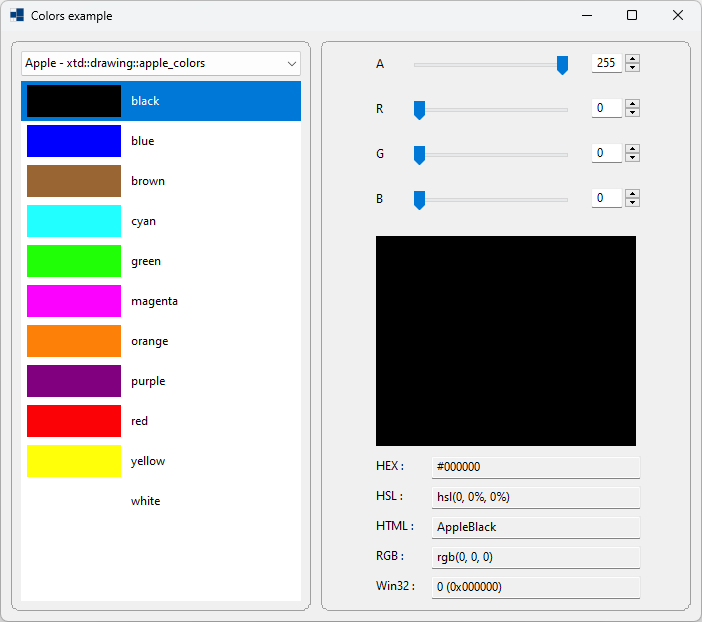
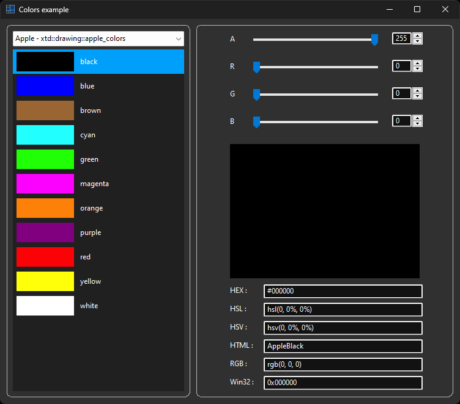
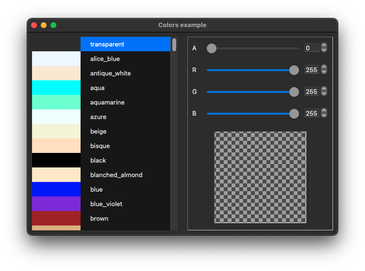
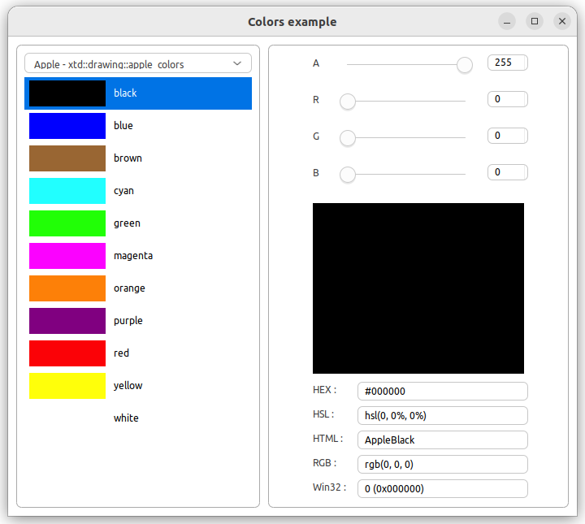
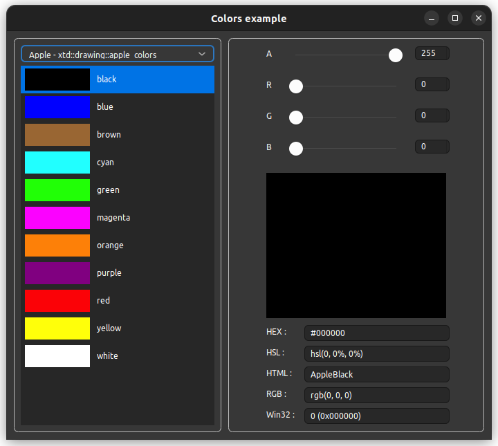

|
xtd
0.2.0
|
Loading...
Searching...
No Matches
colors.cpp
demonstrates the use of xtd::forms::user_control control with xtd::drawing::color.
- Windows
- 

- macOS


- Gnome
- 

#include <xtd/forms/application>
#include <xtd/forms/form>
#include "color_chooser.h"
#include "color_editor.h"
using namespace xtd::forms;
namespace colors_example {
public:
main_form() {
text("Colors example");
client_size({750, 630});
minimum_client_size({750, 630});
colors.parent(*this);
colors.border_style(xtd::forms::border_style::rounded);
colors.location({10, 10});
colors.size({300, 610});
colors.anchor(anchor_styles::left | anchor_styles::top | anchor_styles::bottom);
colors.selected_color_changed += [&] {
editor.color(colors.selected_color());
};
editor.parent(*this);
editor.border_style(xtd::forms::border_style::rounded);
editor.location({320, 10});
editor.size({420, 610});
editor.anchor(anchor_styles::left | anchor_styles::top | anchor_styles::right | anchor_styles::bottom);
colors.selected_index(0ul);
}
private:
color_chooser colors;
color_editor editor;
};
}
auto main()->int {
application::run(colors_example::main_form {});
}
Represents a window or dialog box that makes up an application's user interface.
Definition form.h:52
The xtd::forms namespace contains classes for creating Windows-based applications that take full adva...
Definition xtd_about_box.h:12
Generated on Mon Apr 8 2024 09:08:45 for xtd by Gammasoft. All rights reserved.